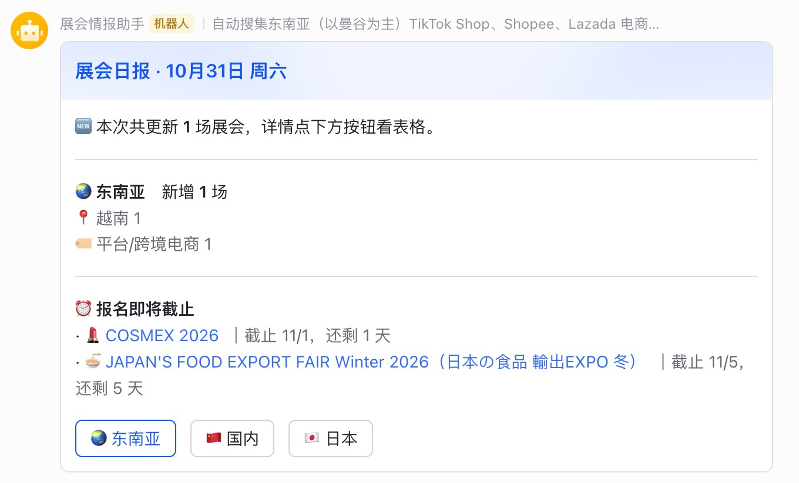
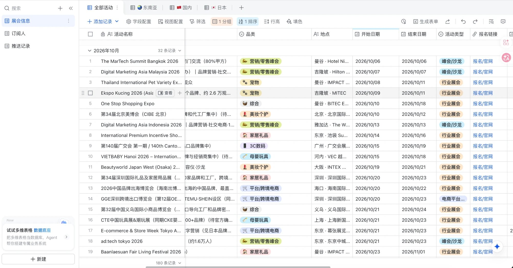

Trade Show Intel Assistant
Built for the BD team. The pain: the best places to find clients are trade shows and platform seller conferences, spread across Vietnam, Thailand, Malaysia, Japan and mainland China. Nobody watched them daily, so the team found out too late or by luck. I built an assistant that runs daily: search, verify, write to a table, and send a daily digest by direct message to subscribed colleagues each morning.
How it works
Searches at 7:00, pushes at 9:30, every day
BeforeRelied on someone happening to see it; registration often missedAfterOne table, one daily digest; see a good one, go register
01Collect🤖 AI
- Check what's already in the table, then search events in the next 15 months, by priority: e-commerce platform events → major industry shows in Vietnam, Thailand, Malaysia → Japan → mainland China; events with no published date go on a to-confirm list and get rechecked next run
02Verify🤖 AI
- Dates and venues are verified on the official site; anything seen only on aggregator sites is marked "pending official confirmation", never made up
03Write to the table🤖 AI
- Deduped by event name plus start date, written into a Base: category, location, start and end dates, type, registration link; never overwrites a status set by a person
04Daily digest🤖 AI
- At 9:30, a direct message to everyone in the subscriber table: how many new events this run, deadlines within 7 days, date clash alerts; add a row with your name to subscribe
05Registration👤 Human
- Read the digest, open the registration link, go back to the table and set the status to "Registered" or "Not considering"
What it looks like

